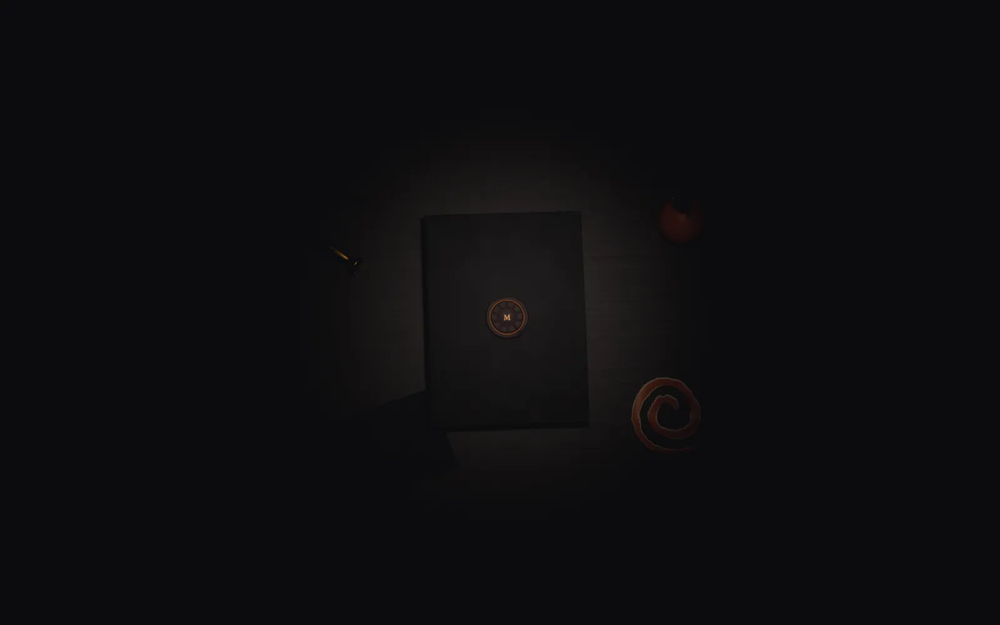
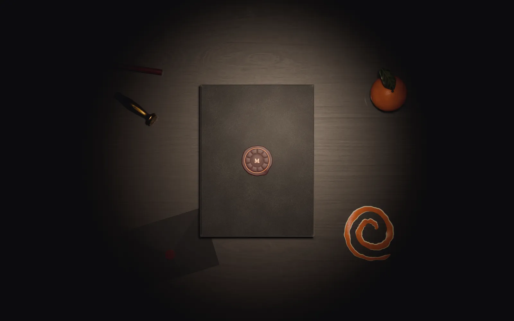

Three ways to bring the desk to life
The same Blender desk (lookdev-06), shown three ways. Each page ends with a decision card: its bytes, its frame time, what it needs and which spec lines it would change. Frame times were measured in a headed Chromium on the studio's laptop GPU; the owner's iPhone ran the original spike at 58.5 fps, and a mid-range Android is still unmeasured.
-

1. Pre-rendered frames
Scroll scrubs 96 frames of the camera settling and the lamp warming; the seal break plays as 37 frames. No WebGL on the home.
-

2. The live book
The three.js book dressed in textures baked from the Blender scene; the cover opens and the pages turn live.
-
3. Hybrid
The frames for the approach and the seal break, handing off to the live book on the same camera.
Numbers
| Number | Value | What it measures |
|---|---|---|
| Approach frames, desktop | 1,275,236 B | 96 WebP q80 frames at 1600x1000, on disk |
| Approach frames, phone | 1,564,474 B | 96 WebP q80 frames at 900x1200, on disk |
| First frame | 6,038 B | the image painted before any script (frame 1, desktop) |
| Seal break, overhead | 842,628 B | 37 frames at 30 fps, 1600x1000 |
| Seal break, close up | 1,702,732 B | 37 frames at 30 fps, 1200x1200 |
| Live textures | 418,604 B | the nine baked WebP files the live book fetches |
| Live JS | 139.6 KB gzip | three.js chunk (135.6 KB) plus the page code, gzip level 9 |
| Live frame time | p50 6.9 ms, p95 7.0 ms | 30 s page-turn benchmark, headed Chromium, Intel Iris Xe (D3D11), 1440x900, a 144 Hz display; vsync-bound |
| Scrub frame time | p50 6.9 ms, p95 7.0 ms | 10 s scroll sweep, same machine, routes 1 and 3 |
| Hand-off, approach to live | 1.1 / 2.9 of 255 | mean pixel difference between frame 96 and the live render (desktop / Pixel 7) |
| Hand-off, seal to live | 2.2 / 3.4 of 255 | mean pixel difference between seal frame 37 and the live render after the seal |